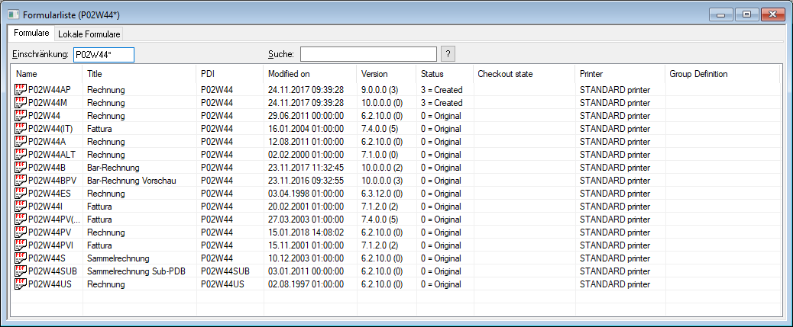

Nach dem Programmaufruf öffnet sich ein Fenster mit der Liste der zur Verfügung stehenden Formulare. Ggf. kann diese Liste auch über den Menüpunkt
1 Datei
1 Formularliste
geöffnet werden.
Achtung
Dieser Menüpunkt ist nur dann vorhanden, wenn kein Formular geöffnet ist.

Die Formularliste ist in die folgenden Bereiche bzw. Register aufgeteilt:
ü Selektion
ü Formulare
ü Lokale Formulare
Selektion
Die nachfolgenden Selektionsvarianten stehen in beiden Register zur Verfügung.
Ø Einschränkung
Mit Hilfe dieses Felds kann die Liste der Formulare eingeschränkt werden, wobei die Suche über den Formularnamen (Spalte "Name") erfolgt. Die Suche wird durch Bestätigung des Suchbegriffs ausgelöst.
Hinweis
Es handelt sich um keine Volltextsuche. D.h. wenn nur ein Teil eines Namens eingegeben werden soll, so muss der Suchbegriff mit einem Wildcard (*) beginnen und / oder enden.
Ø Suche
Mit Hilfe dieses Felds kann die Liste der Formulare eingeschränkt werden (Volltextsuche), wobei die Suche über den Formulartitel (Spalte "Title") und innerhalb der Formulare erfolgt (inklusive Formeln und Steuerelemente). Die Suche wird durch Bestätigung des Suchbegriffs oder Anwahl des Buttons ausgelöst.
Ob nur die passenden oder alle Formulare angezeigt werden sollen, kann über die rechte Maustaste (Funktion "nur Gefundene anzeigen") definiert werden.
Sobald ein Formular aus der Liste heraus geöffnet wird, so werden die Suchtreffer innerhalb des Formulars automatisch markiert und die entsprechenden Flags aktiviert.
Hinweis
Wenn alle Formulare angezeigt werden sollen, dann werden die "gefundenen" Formulare in der Liste selektiert. Zwischen den Treffern kann per F3 (vorwärts) und SHIFT + F3 (rückwärts) navigiert werden.
Register "Formulare"
In dieser Tabelle werden alle Formulare (originale und geänderte) mit folgenden Informationen angezeigt:
Ø Name
Name des Formulars
Ø Title
Bezeichnung des Formulars
Ø PDI
Hier wird angezeigt, auf welche PDI-Information zugegriffen wird. Damit wird definiert, welche Variablen im Formular zur Verfügung stehen.
Ø Modified on
Hier wird das letzte Änderungsdatum angezeigt.
Ø Version
Hier ist die Version ersichtlich, in welcher das Formular erstellt wurde.
Ø Status
Hier wird der Status des Formular angezeigt, wobei folgende Optionen unterschieden werden:
ü 0 = Original
Das Formular ist
noch im Originalzustand und wurde noch nie verändert.
ü 1 = Changed
Das Formular wurde
bereits einmal verändert.
ü 2 = Imported
Das Formular wurde
aus einer Datei (.PDF) importiert.
ü 3 = Created
Das Formular wurde
im Formular Editor erstelle.
Ø Checkout state
Hier wird der Name der Workstation und der Windows-Benutzer angezeigt, welcher das Formular gerade bearbeitet (ausgecheckt hat). Nähere Information zum Thema "Einchecken und Auschecken" entnehmen Sie bitte dem Kapitel "Datei".
Hinweis
Ein ausgechecktes Formular kann nur von der gleichen Workstation und vom gleichen Benutzer wieder eingecheckt werden.
Achtung
Bevor ein Update eingespielt wird, muss unbedingt geprüft werden, dass alle Formulare eingecheckt sind - ansonsten werden diese lokalen Änderungen nicht übernommen.
Ø Printer
In dieser Spalte ist ersichtlich, welcher Standarddrucker dem Formular zugeordnet wurde. Diese Einstellung kann pro Formular im Seitenaufbau hinterlegt werden.
Ø Group Definition
Dieses Feld hat derzeit keine Funktion.
Register "Lokale Formulare"
Der Aufbau der Tabelle entspricht dem des Registers "Formulare". Lokale Formulare werden dann verwendet, wenn diese nur für einen Arbeitsplatz benötigt werden, z.B. weil dort ein spezieller Druckvorgang oder ein spezieller Drucker benötigt wird.
Für die Erstellung von lokalen Formularen wird das gewünschte Formular im Fenster "Formularliste" (Register "Formulare") ausgewählt. Durch Drücken der rechten Maustaste wird ein Menü geöffnet, aus dem die Option "Kopieren" gewählt wird. Danach kann in das Register "Lokale Formulare" gewechselt werden. Dort wird dann das Formular über die rechte Maustaste (Option "Einfügen") eingefügt. Somit ist das Formular als lokales Formular gespeichert.
Hinweis
Ein lokales Formular kann wieder im Register "Lokale Formulare", rechte Maustaste und Option "Formularname entfernen" gelöscht werden.